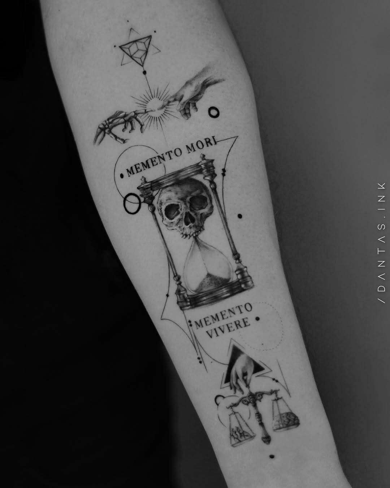

Projeto acadêmico • filosofia aplicada ao autoconhecimento
Conhecer o mundo começa por conhecer a si mesmo.
Sou estudante da SPTech e este projeto acadêmico individual nasceu da união entre desenvolvimento web e filosofia para apoiar o autoconhecimento.
Em momentos difíceis da minha vida, a filosofia se tornou uma base para fortalecer a resiliência e não desistir dos meus sonhos. Esta aplicação transforma essa jornada em uma experiência prática de estudo.
Como a experiência funciona
Na Descoberta, você responde perguntas filosóficas em sequência. No Resultado, acompanha como a soma das respostas levou ao desfecho atual. No Diário, registra reflexões pessoais. Na Dashboard, os dados aparecem de forma agregada, sem expor respostas individuais.
Esse fluxo foi desenvolvido no escopo acadêmico atual com HTML, CSS, JavaScript Vanilla, Node.js, Express e MySQL.
Elementos visuais inspirados nos símbolos da tatuagem que motivou o projeto:
 Memento mori
Memento mori Razão e emoção
Razão e emoção Escolhas e responsabilidade
Escolhas e responsabilidade
Símbolos da tatuagem e significado
A ampulheta dentro da caveira representa o tempo de vida se esgotando, com “memento mori” acima e “memento vivere” abaixo.
A balança com coração e cérebro representa o equilíbrio entre razão e emoção.
A releitura da criação de Adão apresenta duas mãos, com a mão de Adão em esqueleto.

